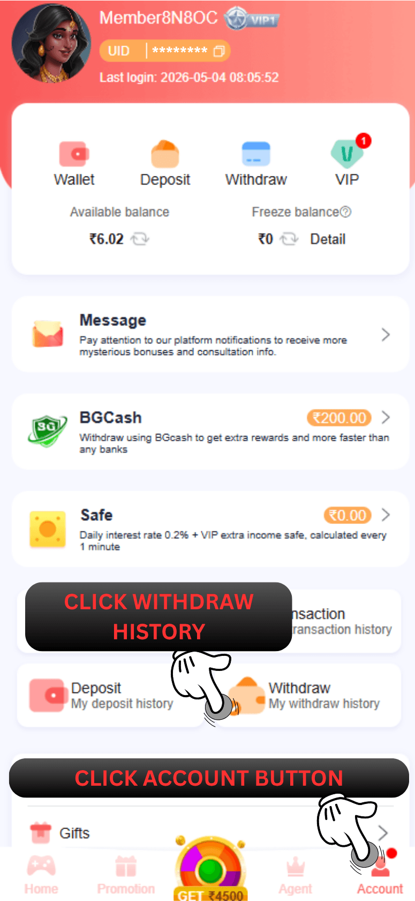

66 Lottery इतिहास वापस लें
प्रश्न: मैं यह कैसे देख सकता हूं कि मैंने इस खाते से कितनी बार या कितनी राशि निकाली है?
उत्तर: नमस्कार, आपके द्वारा अब तक की गई निकासी देखने के लिए कृपया अकाउंट पर क्लिक करें और विदड्रॉल माई विदड्रॉल हिस्ट्री चुनें। धन्यवाद

प्रश्न: निकासी इतिहास का उपयोग किसलिए किया जाता है?
उ: निकासी इतिहास के लिए 66 Lottery खाते पर आपके द्वारा की गई सभी निकासी की जांच करने के लिए उपयोग करें और आप वहां यह भी जांच सकते हैं कि आपने कितनी राशि की निकासी की है, आप किस विधि से निकासी करते हैं और आपकी निकासी की स्थिति, सफल, अस्वीकृत, प्रसंस्करण